Deep dive: a self-driving car AI, in full detail
This is the full-detail version of the guide: every table, every precise number, every function name. For the short, simple version, start with HOW-IT-WORKS.md.
This guide explains every part of Bug Driver: a small car that teaches itself to drive. You don't need to know anything about AI. You don't even need to code. Every word that might be new is explained the first time it shows up, and it's also in the glossary at the end.
Every number in this guide is real. It comes from the actual program, not from a made-up example. Each one has a "reproduce it" note, so you can check it yourself. All the pictures are drawn by the program too, from real runs: node tools/figures.js redraws every one of them, and writes the numbers it used to docs/img/figure-data.json.
Chapters
0. What we're building
The one idea: a little car learns to drive a race track by itself, using nothing but 70 numbers and a lot of trial and error.
Analogy: imagine 100 blindfolded drivers on a track. Nobody tells them how to drive, and nobody gets better during a drive. But the ones who get furthest pass their driving habits on to their children, with small copying mistakes. Some of those mistakes happen to help. After many generations, the children of the children drive well. That is exactly what happens here (chapter 4).
Key figure
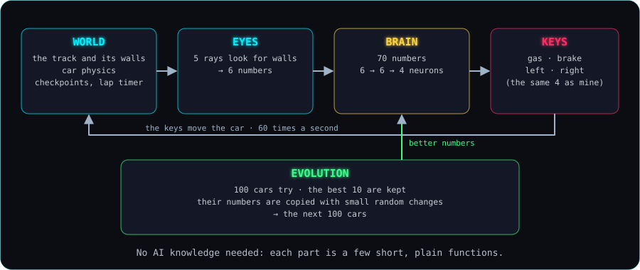
The four parts. The world is the track and the car. The eyes look for walls and turn what they see into 6 numbers. The brain turns those 6 numbers into 4 key presses: gas, brake, left, right. These are the same 4 keys I use when I drive myself. Evolution sits around all of it: it keeps the best brains and makes slightly changed copies of them for the next round.
The whole program is a simulation: a pretend world that runs inside the computer, with its own rules. This one runs in a web browser. It is written in plain JavaScript, a common programming language, with no AI library at all. Every part is a handful of short functions. A function is a small, named piece of code that does one job, like castRay(), "how far can the car see in one direction". This guide links to them by name.
No AI knowledge needed. Here is the plan, one chapter at a time:
- The world (chapter 1): a track, a car, and rules that never change.
- Eyes (chapter 2): 5 lines that measure how far away the walls are.
- Brain (chapter 3): 70 numbers that turn what the car sees into which keys to press.
- Evolution (chapter 4): keep the brains that drove furthest, copy them with small changes, repeat.
- Reading a brain (chapter 5): we freeze one moment and follow a decision from "wall at 23 px" to "press LEFT".
Real numbers: in our official run (seed 3, see chapter 4) the first car to finish a lap appeared in generation 4. Its lap took 38.18 seconds. By generation 80 the best car drove a lap in 12.47 seconds. My own best lap, driving with the arrow keys, is 26.40 seconds. Reproduce it: node tools/evolution-report.js 3, then look in runs/seed-3.json. My lap is ghosts/me-v3.json.
What actually happened: this project is built on camera with an AI coding assistant, one prompt at a time. Everything that went wrong is written down in DEVLOG.md and kept in the git history. Nothing was tuned in secret to make the story nicer.
The prompt: PROMPTS.md, entry 1: project setup.
In the code: the entry point is src/main.js. The simulation lives in src/sim/, the drawing in src/render/, and the browser glue (keyboard, saving) in src/game/.
1. The world
The one idea: before anything can learn, it needs a world with fixed rules: a track with walls, a car that obeys simple physics, and a clock that ticks exactly the same way every time.
Analogy: a board game. The board (the track) and the rules (how the car moves) never change while you play. If two people make exactly the same moves, the game ends exactly the same way.
Key figure
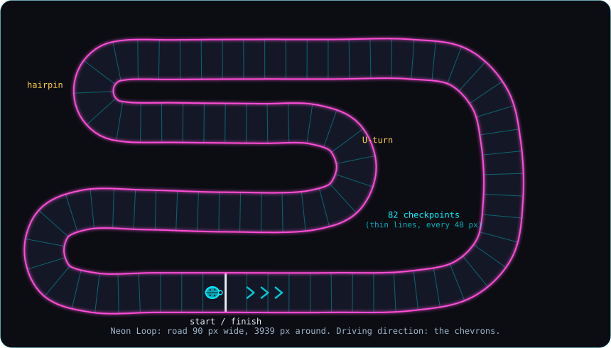
The real track, "Neon Loop". The two pink lines are the walls. The thin cyan lines across the road are the 82 invisible checkpoints. The white line is the start and finish. The chevrons (>>>) show the driving direction. The ladybug is the car, on its starting spot.
The track
The track is stored as data: a list of 35 points that trace the middle of the road, plus a width. The program draws a smooth curve through the points and puts a wall on each side. Because the track is just a list of numbers, it can later be shared as a link.
The road is 90 px wide and 3939 px around. A px (pixel) is one dot on the screen; the whole screen is 1280 × 720 px.
Checkpoints
Checkpoints are invisible lines across the road, one every 48 px, 82 in total. A lap only counts if the car crosses every checkpoint in order, in the right direction, and then the start line. They also tell us how far a car got. That matters a lot in chapter 4.
We tested the cheats. Driving the whole loop backwards counts nothing. Driving over the start line, reversing back over it and crossing again counts nothing. Skipping 62 of the 82 checkpoints (by teleporting the car in a test) counts nothing. Reproduce it: npm test, the tests in tests/step1.test.js.
The car and my controls
The car is a ladybug from above. Its hitbox, the shape the program uses to decide whether it touched a wall, is 36 px long and 26 px wide and follows the round shell. I drive it with 4 keys: gas, brake, left, right. Simple arcade physics:
- It speeds up when I hold gas, up to 330 px per second.
- It slows down fast when I brake.
- It slows down a little by itself when I let go.
- It steers less when it's going very fast. At top speed it turns about half as sharply as at medium speed.
Touching a wall is a crash. The car stops dead, and that's the end of its run. It doesn't slide along the wall.
The clock: a fixed timestep
The simulation moves forward in small, equal steps, each one sixtieth of a second long. Every step, the program reads which keys are held, moves the car a little, and checks the walls and checkpoints. That's it.
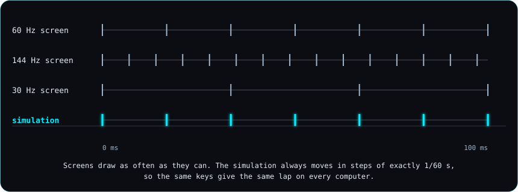
Screens refresh at different speeds: 60, 144, or 30 times a second. The simulation ignores that and always moves in steps of exactly one sixtieth of a second. That's called a fixed timestep.
Why it matters: if the step length changed with the screen, the same key presses would give a slightly different lap on a different computer. With a fixed timestep, the same key presses always give exactly the same lap.
One seed: same seed, same everything
Later we need random numbers, for the first brains and for the small changes in evolution. A computer can make random-looking numbers from a starting number called a seed. The same seed always gives the same list of "random" numbers. We use one seed for everything, so the same seed replays the exact same evolution, every car and every crash. Reproduce it: run node tools/evolution-report.js 3 twice. Both runs write exactly the same generation history to runs/seed-3.json; only the line saying how long it took differs. The test tests/step5.test.js checks the first 6 generations against the saved file.
Real numbers: my best lap is stored as a ghost: where the car started, plus the keys I held on every one of the 1584 steps. Replaying those keys through the simulation drives exactly the same lap again, to the step: 1584 steps, 26.40 seconds. Reproduce it: node --test tests/ghost.test.js.
For comparison, a hand-written test driver (just a script that follows the middle of the road and slows down for curves; no AI) gets:
- 17.25 s with careful settings.
- 12.68 s with its fastest of 980 settings.
- The theoretical floor, flat out on the middle line all the way round, is 11.93 s.
Reproduce it: node tools/reference-lap.js.
Why the road went from 64 to 90 px
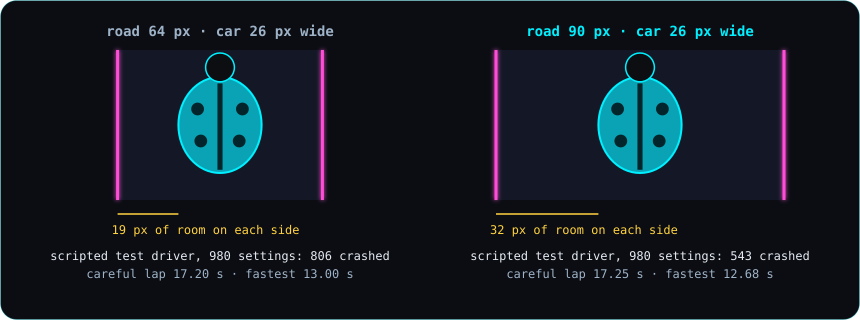
The car to scale on the old 64 px road and the new 90 px road. The room on each side grew from 19 px to 32 px.
The road started at 64 px. Then two things happened, both from real test drives:
- The car was too hard to see. It was redrawn as a bigger ladybug (26 px wide instead of 16). Now it only had 19 px to spare on each side.
- The road felt too tight. So it went to 90 px. The layout stayed the same, but at 90 px the old hairpin would have pinched its inner wall into an almost-sharp point. So the hairpin was redrawn as a round half-circle, and the top straight moved down 15 px so the wall wouldn't run into the lap timer at the top of the screen.
The hand-written test driver shows the difference. Out of the same 980 settings, 806 crashed on the 64 px road and 543 on the 90 px road. Reproduce it: node tools/reference-lap.js (the 64 px numbers are in DEVLOG.md, entry "A bigger ladybug you can actually see").
After that, the physics, the car's shape and the track were frozen: changing them now would make my ghost lap and every training run invalid.
What actually happened
- Two of the first tests failed. Both times the bug was in the test, not in the game.
- The car was hard to see, and then the road felt tight. Two fixes, each its own commit.
- An unwanted system file (
.DS_Store) slipped into a commit and was removed in the next one. - When I test-drove it, the steering and physics felt right, so they were kept exactly as they were.
The prompts: entry 2: the track and the car, entry 3: the car is hard to see, entry 4: the road is too tight.
In the code
buildTrack()insrc/sim/track.js: turns the 35 points and the width into walls, checkpoints and a start spot.stepCar()insrc/sim/car.js: moves the car one step for the keys held.steeringGrip()insrc/sim/car.js: how sharply the car can turn at its current speed.hitWall()insrc/sim/car.js: does the car's hitbox touch a wall?crossedCheckpoint()andupdateLaps()insrc/sim/laps.js: lap counting with checkpoints.stepWorld()insrc/sim/world.js: one step of the whole world.STEPinsrc/sim/constants.js: the fixed step, one sixtieth of a second.makeRng()insrc/sim/rng.js: the seeded random number generator.replayGhost()insrc/sim/ghost.js: drives a recorded lap again from its keys.
2. Eyes
The one idea: the car can't see the track; it only knows how far away the wall is in 5 directions, plus how fast it's going: 6 numbers, nothing else.
Analogy: a bat in the dark, or a car's parking sensors. They don't see a picture. They only hear "something is 23 px away, that way".
Key figure
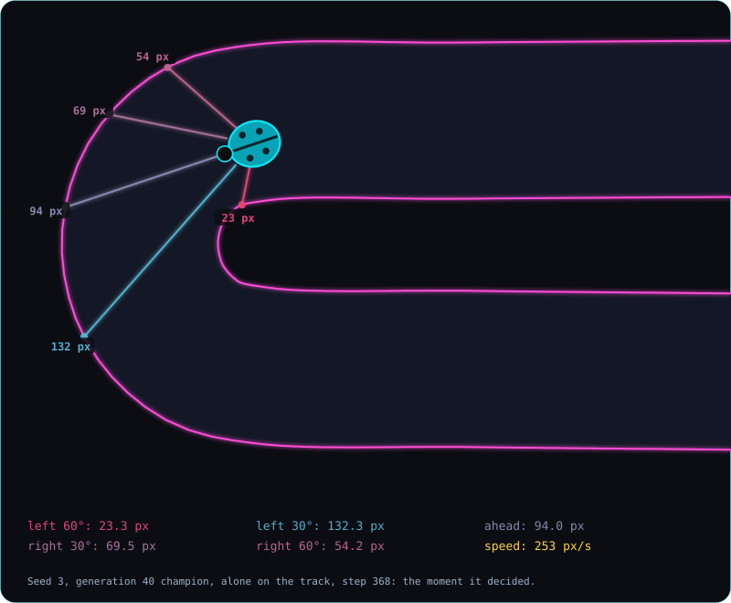
A real moment at the hairpin. The 5 lines are the car's eyes, called rays. Each one goes out until it hits a wall, up to 200 px. It turns from cyan (far) to pink-red (close). The labels are the real distances. (This is the seed 3, generation 40 champion, alone on the track, at step 368.)
The 5 rays point straight ahead, 30° to each side, and 60° to each side. Each eye sits on the car's outline, not in its middle, so "0 px" really means the wall is touching the car. The front eye is 21 px from the car's center, the 30° eyes 15.9 px, and the 60° eyes 12.4 px.
Six numbers between 0 and 1
The brain (chapter 3) gets 6 numbers: the 5 distances and the speed. Before it gets them, each one is turned into a number between 0 and 1:
- Eyes: a wall touching the car is 1. Nothing within 200 px is 0. In between, the closer the wall, the closer to 1.
- Speed: standing still is 0. Flat out (330 px/s) is 1. Reversing also counts as 0.
| distance to the wall | 0 px | 50 px | 100 px | 150 px | 200 px or more |
|---|---|---|---|---|---|
| number the brain gets | 1.00 | 0.75 | 0.50 | 0.25 | 0.00 |
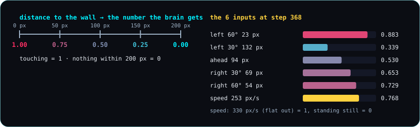
Left: the scale from distance to number. Right: the 6 real inputs at the hairpin moment.
Why bother? Raw distances go from 0 to 200, while speed goes from 0 to 330. The brain multiplies everything by its own numbers (chapter 3). If one input were hundreds and another were tiny, the big one would drown out the small one. Putting everything between 0 and 1 gives every input a fair say. Turning a number into this common 0-to-1 scale is called normalizing it.
Interactive later: drag the car around the track and watch the 5 rays and the 6 numbers change live.
Real numbers (the hairpin moment, seed 3 generation 40 champion, step 368):
| eye | distance | input |
|---|---|---|
| left 60° | 23.3 px | 0.883 |
| left 30° | 132.3 px | 0.339 |
| ahead | 94.0 px | 0.530 |
| right 30° | 69.5 px | 0.653 |
| right 60° | 54.2 px | 0.729 |
| speed | 253 px/s | 0.768 |
The left 60° eye is very close to the inner wall of the hairpin (23.3 px), so its number is high: 0.883. Ahead is 94 px. That's the far side of the hairpin, which the car is turning around. Reproduce it: node tools/figures.js, then frame.view and frame.inputs in docs/img/figure-data.json.
Are the eyes right? On a straight, in the middle of the road, the two 60° eyes measure 39.58 px and 39.47 px. Drawing it out on paper gives 39.52 px. The tiny difference is because the road there is tilted by a fifth of a degree. A second test checks 150 rays from a real lap a completely different way: it walks along each ray in quarter-pixel steps until it leaves the road. The worst disagreement was 0.34 px. Reproduce it: node --test tests/step2.test.js.
Looking doesn't change anything. A lap where the car reads its eyes every step is identical, to the last digit, to one where it doesn't.
What actually happened
- One new test failed on its first run. Its test wall was too short for a 30° ray to reach it. The eyes were fine.
- The rays were too faint on screen and were made brighter.
- In the game, pressing E shows the real distances and the 6 numbers. That screen looked good enough to be its own short video.
The prompt: entry 5: give the car eyes.
In the code
castRay()insrc/sim/sensors.js: how far can the car see in one direction.readSensors()insrc/sim/sensors.js: the car's whole view of the world, 5 distances.eyePosition()insrc/sim/sensors.js: where each eye sits on the car's outline.getInputs()insrc/sim/sensors.js: the only 6 numbers the car will ever know.inputsFromView()insrc/sim/sensors.js: the same 6 numbers, from distances already measured.
3. Brain
The one idea: the brain is 70 numbers; it multiplies what the car sees by those numbers, adds things up, and the result decides which of the 4 keys to press.
Analogy: a panel of judges with scorecards. Each judge looks at the same 6 facts. Each one cares about some facts more than others: their "weights". The judges give their scores to 4 final judges, one per key. If a final judge's score is high enough, that key gets pressed.
Key figure
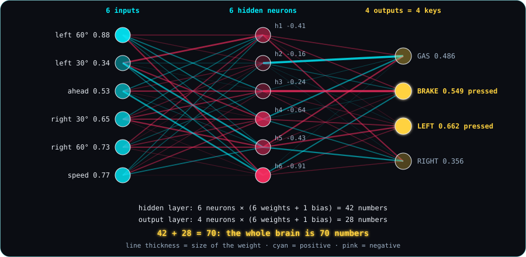
The real brain of the seed 3 generation 40 champion, at the hairpin moment. The 6 inputs are on the left, the 6 "hidden" neurons in the middle, and the 4 outputs (the keys) on the right. Every line is one weight: thicker means a bigger weight, cyan means positive, pink means negative. BRAKE and LEFT are lit: both are pressed.
One neuron
A neuron is the brain's smallest part. It does four things, always the same four:
- Multiply each input by its own number, called a weight.
- Add them all up.
- Add one more number, called the bias.
- Squash the result into a tidy range.
That's all. A big pile of these is a neural network.
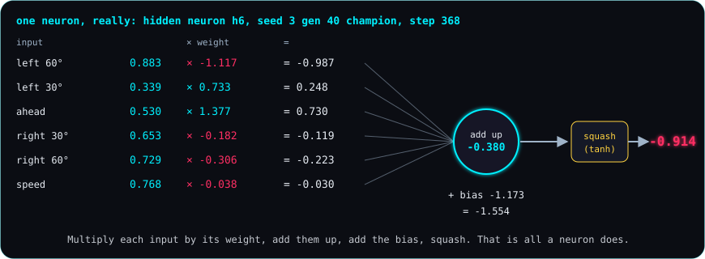
One real neuron (hidden neuron h6) at the hairpin moment, worked through.
Real numbers (hidden neuron h6, seed 3 generation 40 champion, step 368):
| input | value | × weight | = |
|---|---|---|---|
| left 60° | 0.883 | × −1.117 | −0.987 |
| left 30° | 0.339 | × 0.733 | 0.248 |
| ahead | 0.530 | × 1.377 | 0.730 |
| right 30° | 0.653 | × −0.182 | −0.119 |
| right 60° | 0.729 | × −0.306 | −0.223 |
| speed | 0.768 | × −0.038 | −0.030 |
Add up the last column: −0.380. Add the bias, −1.173: that gives −1.554. Squash it: −0.914. That's what this neuron passes on. Reproduce it: node tools/figures.js, then frame.hidden[5] in docs/img/figure-data.json (h6 is number 5, counting from 0). The game shows the same numbers: open index.html?champion=3-40, press B, then F when it enters the hairpin.
Squash: tanh and sigmoid
A sum can be any size: 0.2, or 40, or −300. Squashing turns any number into a tidy one, so nothing runs off to infinity. Big stays big, small stays small, and everything lands in a fixed range. We use two kinds. Both are called activation functions:
- tanh for the 6 hidden neurons: the result is always between −1 and 1.
- sigmoid for the 4 keys: the result is always between 0 and 1. Above 0.5 means the key is pressed.
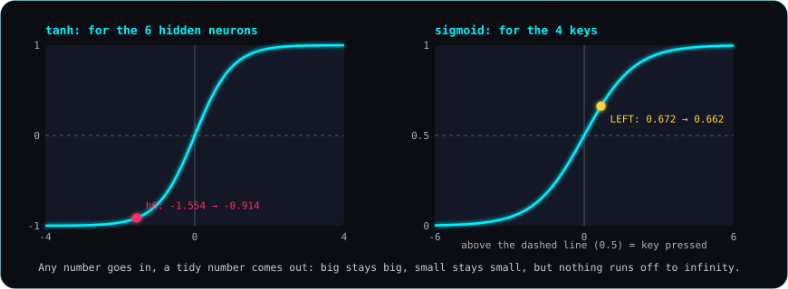
Left: tanh. Hidden neuron h6's −1.554 comes out as −0.914. Right: sigmoid. The LEFT key's 0.672 comes out as 0.662, which is above 0.5, so LEFT is pressed.
Interactive later: a slider for each weight of one neuron, with the sum, the squash and the "pressed / not pressed" updating as you drag.
The whole network: 6 → 6 → 4
- The 6 inputs go into 6 hidden neurons. They're called "hidden" only because you never see them from outside; they sit between the eyes and the keys. Each hidden neuron has 6 weights (one per input) and 1 bias.
- The 6 hidden results go into 4 output neurons, one per key: GAS, BRAKE, LEFT, RIGHT. Each has 6 weights (one per hidden neuron) and 1 bias.
- Each output above 0.5 means that key is held this step. The AI drives with exactly my 4 keys, no special powers.
A group of neurons that all look at the same inputs is called a layer. So this brain has two layers.
The whole brain is 70 numbers. Count them:
- hidden layer: 6 neurons × (6 weights + 1 bias) = 42
- output layer: 4 neurons × (6 weights + 1 bias) = 28
- 42 + 28 = 70
In the code, it's literally one list of 70 numbers. Nothing else is stored. Everything a car "knows" about driving is in those 70 numbers.
Generation 1: random brains, glorious chaos
At the start, nobody knows good numbers. So the first 100 brains get 70 random numbers each, between −1 and 1, from the seed. These 100 cars together are generation 1. They start together, and they can't hit each other, only the walls.
A car is out when it crashes, or when it goes 3 seconds without reaching a new checkpoint. That second rule catches cars that spin in place or drive backwards. A generation ends when every car is out, or after 60 seconds.
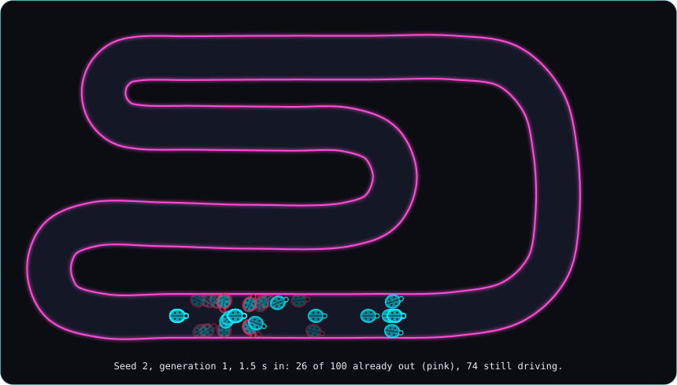
Seed 2, generation 1, 1.5 seconds in: 26 of the 100 cars have already crashed (pink), 74 are still going, mostly nowhere.
Generation 1 for 5 different seeds:
| seed | barely moved | went backwards | crashed in the first 2 s | best car got | best car was out by |
|---|---|---|---|---|---|
| 1 | 57 | 16 | 25 | 14.5% of a lap | a crash at 2.97 s |
| 2 | 46 | 17 | 28 | 20.6% | a stall at 6.97 s |
| 3 | 61 | 20 | 14 | 65.1% | a crash at 11.40 s |
| 4 | 68 | 5 | 22 | 49.6% | a crash at 6.52 s |
| 5 | 48 | 23 | 28 | 50.6% | a crash at 6.62 s |
"Barely moved" means never got one car length (36 px) away from the start. "Went backwards" means it ended more than 36 px behind the start. A car can be in more than one column. No car finished a lap. Reproduce it: node tools/generation-report.js.
Seed 3's best random brain got 65% of the way round on pure luck. Random numbers can sometimes drive a bit. They just can't drive well.
What actually happened
- About 50 cars that never moved all sat on exactly the same spot. Drawn half see-through on top of each other, the pile looked like one bright, live car, even when only 2 cars were still driving. Now wrecks on the same spot are drawn once.
- One output was 0.49982 but showed as "0.500", right at the line between pressed and not pressed. Values that close to 0.5 now show more decimals.
The prompt: entry 6: a brain, and 100 cars with random brains.
In the code
neuron()insrc/sim/brain.js: multiply each input by its weight, add them up, add the bias, squash.layer()insrc/sim/brain.js: several neurons looking at the same inputs.tanh()andsigmoid()insrc/sim/brain.js: the two squash functions.outputs()insrc/sim/brain.js: the 4 key values for 6 inputs.think()insrc/sim/brain.js: which keys to press, every output above 0.5.randomBrain()insrc/sim/brain.js: 70 seeded random numbers between −1 and 1.BRAIN_SIZEinsrc/sim/brain.js: 70.createGeneration()andstepGeneration()insrc/sim/generation.js: 100 cars, the stall rule, the 60-second limit.
4. Evolution
The one idea: keep the brains that drove furthest, make slightly changed copies of them, and repeat. No one ever tells the car how to drive.
Analogy: breeding. A farmer doesn't design a faster horse. They pick the fastest horses to have foals, again and again, and over many generations the horses get faster.
Key figure
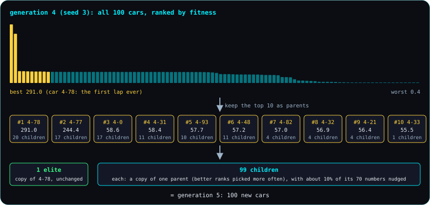
One real generation (seed 3, generation 4). All 100 cars are ranked, the top 10 become parents, and the next generation is 1 unchanged copy of the best plus 99 slightly changed children.
Fitness: "go far; if you finish, finish fast"
To pick the best, we need a score. It's called fitness:
- How far along the track the car got: the number of checkpoints it passed in order, plus how far it was toward the next one.
- If it finished a lap, a bonus: 6000 divided by the lap time in seconds. The faster the lap, the bigger the bonus. A 38.18 s lap earns 157 points; a 12.53 s lap earns 479.
A car that finished a lap always beats one that didn't.
Four steps from one generation to the next
- Selection: rank all 100 by fitness and keep the top 10 as parents.
- Elitism: the single best brain goes into the next generation unchanged. The simulation always plays out the same way, so this copy drives exactly the same run again. That means the best can never get worse.
- Mutation: each of the other 99 children is a copy of one parent's 70 numbers. Better parents are picked more often: the best of the 10 ten times as often as the 10th. Then each of the 70 numbers has a 10% chance of a small random nudge. Most nudges are small, a few are bigger; a typical one is about 0.3.
- Next generation: 1 elite + 99 children = 100 new cars. Run them, and repeat.
There is no "crossover" (mixing two parents). One parent per child keeps it simple.
Real numbers (seed 3, generation 4, from the figure above): car 4-78 scored 291.0, the best of the generation, because it drove the first lap ever. Car 4-77 came second with 244.4. The 10th parent scored 55.5. In generation 5, car 4-78's brain is the unchanged elite, and it also got 20 of the 99 children. The 10th parent got 1 child. Reproduce it: node tools/figures.js, then oneGeneration in docs/img/figure-data.json.
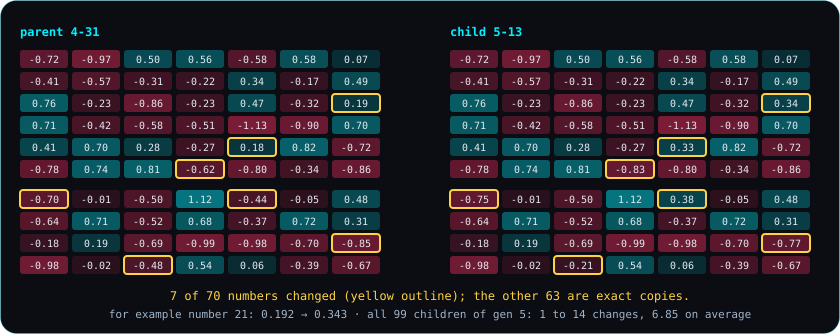
Mutation for real: car 5-13 next to its parent, car 4-31. 7 of the 70 numbers changed (outlined); the other 63 are exact copies. Across all 99 children of generation 5, the number of changes ran from 1 to 14, 6.85 on average. That's close to the 7 you'd expect from a 10% chance on 70 numbers.
Seed 3: from chaos to a 12.43 s lap
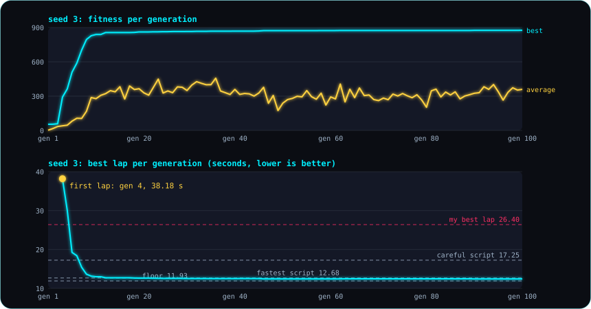
Top: the best and the average fitness of each generation. Bottom: the best lap time of each generation, against my 26.40 s and the hand-written test driver.
- Generation 4: the first lap ever, by car 4-78, in 38.18 s. Slower than me. 2 cars finished a lap that generation.
- Generation 6: the best lap is 19.25 s, already faster than my 26.40 s.
- Generation 10: 13.17 s, and 40 of the 100 cars finish a lap.
- Generation 20: 12.65 s, faster than the best hand-written test driver (12.68 s).
- Generation 100: 12.43 s, about half a second off the theoretical floor (11.93 s).
The average fitness keeps jumping around. That's because most children are a bit worse than their parents: mutation is mostly a gamble that doesn't pay. The best line only goes up, thanks to the elite copy. Reproduce it: node tools/evolution-report.js 3, then runs/seed-3.json.
Interactive later: run the evolution right in the page, with the generation chart drawing itself as it goes.
Seed 1: stuck at 51.8% for 95 generations
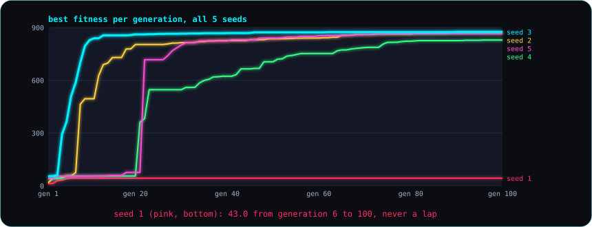
The best fitness of every generation, for 5 seeds. Seed 1 is the flat line at the bottom.
Seed 1 never finished a lap. Its best fitness reached 43.0 (51.8% of a lap) in generation 6, and then stayed exactly at 43.0 through generation 100. That's 95 generations at the same score. In generations 7 to 100, 9306 children were born, and not one of them got further.
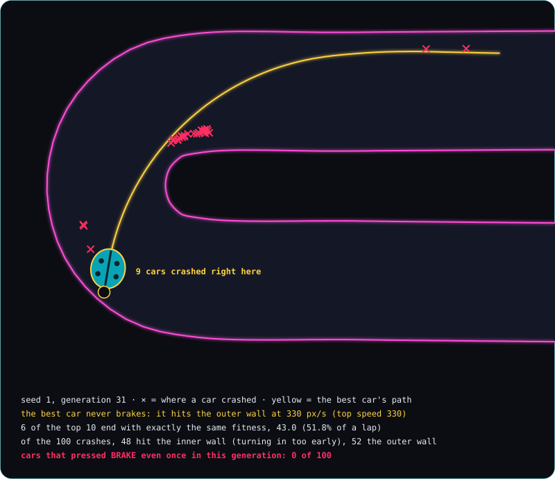
Seed 1, generation 31. The yellow line is the best car's path. It drives flat out the whole way and hits the outer wall at the hairpin exit at 330 px/s. 9 cars crashed on exactly that spot. Not one of the 100 cars pressed BRAKE even once.
Why it gets stuck. The facts above are measured. The "why" is not; it is an inference from them. Our best explanation: early on, seed 1's best brain was one that never brakes. It's fast, so it scored well, and every following generation was made from it and from brains like it. But nobody can drive this hairpin flat out. At 330 px/s the car can only turn in a wide arc, and the hairpin is far tighter. To get past, a brain would need to slow down for the hairpin (brake, or at least let go of the gas), and that's a big change, not a small nudge. So every child is still a "never brake" driver. Some turn in too early and hit the inner wall (48 of the 100 crashes in generation 31). Others go just as far and hit the outer wall (52 of them). The best score can't go up, and thanks to the elite copy it can't go down either, so it sits there. (We didn't test this explanation directly, for example by forcing a car to brake; it fits everything we measured.)
This is called a local optimum: a dead end that looks like the top. From where you stand, every small step goes down, even though a much higher place exists somewhere else. Evolution with small nudges is good at climbing, but it can't jump. Reproduce it: node tools/evolution-report.js 1 for the flat line, node tools/figures.js for generation 31 (seed1 in docs/img/figure-data.json).
All 5 seeds, and why seed 3 is the official one
| seed | first lap | best lap at gen 10 | gen 20 | gen 40 | gen 80 | gen 100 |
|---|---|---|---|---|---|---|
| 1 | never | — | — | — | — | — |
| 2 | gen 8 (18.40 s) | 16.90 s | 13.58 s | 13.20 s | 12.58 s | 12.53 s |
| 3 | gen 4 (38.18 s) | 13.17 s | 12.65 s | 12.52 s | 12.47 s | 12.43 s |
| 4 | gen 21 (27.27 s) | — | — | 17.32 s | 13.28 s | 13.13 s |
| 5 | gen 22 (15.50 s) | — | — | 13.22 s | 12.57 s | 12.57 s |
"First lap" is the first lap ever completed, and how long that lap took. Reproduce it: node tools/evolution-report.js <seed> for each seed.
We picked seed 3 as the official one for the video, and we picked it after seeing this table. That's a choice, and we say so:
- It learned first.
- At generation 5 it already finished a lap but was still slower than me (30.02 s against 26.40 s). That's a real "I'm still winning" moment before it overtakes me.
- From generation 10 on, it's the fastest of the five at every checkpoint generation.
Four of the five seeds learned to drive. One never did.
What actually happened: the code worked the first time. The surprise was seed 1, and the rules say a stuck seed is part of the story, not something to fix quietly. It's in the video as its own scene.
The prompt: entry 7: export my ghost, then evolution.
In the code
fitness()insrc/sim/generation.js: go as far as you can; if you finish a lap, finish fast.trackProgress()insrc/sim/generation.js: checkpoints passed in order, plus the fraction to the next one.selection()insrc/sim/evolution.js: rank all cars, keep the top 10.pickParent()insrc/sim/evolution.js: pick a parent, better ranks more often.mutate()insrc/sim/evolution.js: copy 70 numbers, nudge each one with a 10% chance.gaussian()insrc/sim/evolution.js: a random nudge, mostly small, sometimes bigger.nextGeneration()insrc/sim/evolution.js: 1 elite + 99 mutated children.finishGeneration()insrc/sim/evolution.js: records the stats and saves the champions of generations 1, 5, 10, 20, 40, 80.stepEvolution()andrunEvolution()insrc/sim/evolution.js: run it all, generation after generation.
5. Reading a brain
The one idea: we can freeze any moment and follow one decision all the way, from "the wall on my left is 23 px away" to "press LEFT", and every number on the way is the real one.
Analogy: a replay with the referee's notes. You don't just see the car turn. You see exactly which facts pushed which way, and by how much.
Key figure
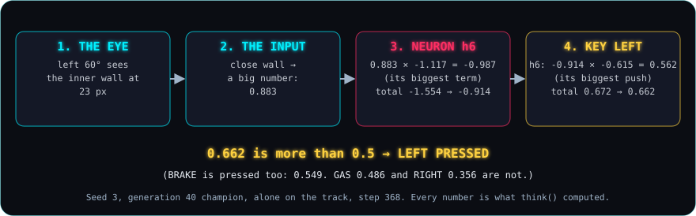
One decision from start to end. The seed 3 generation 40 champion, alone on the track, at step 368 (the same moment as chapters 2 and 3).
Real numbers, following the path:
- The eye. The left 60° eye sees the hairpin's inner wall 23.3 px away.
- The input. A close wall becomes a big number: 0.883.
- Hidden neuron h6. Its biggest term is that eye: 0.883 × −1.117 = −0.987. With the other 5 terms and the bias, its total is −1.554. Squashed, that's −0.914.
- The LEFT key. Of LEFT's 6 terms, h6's is the biggest push: −0.914 × −0.615 = +0.562. A negative times a negative is a positive, so a strongly negative h6 pushes LEFT up. LEFT's sum is 1.758, plus its bias −1.086, total 0.672. Squashed: 0.662.
- The decision. 0.662 is more than 0.5, so LEFT is pressed. BRAKE is pressed too (0.549). GAS (0.486) and RIGHT (0.356) are not.
Every number here is exactly what the brain computed in that step. A test checks this on 100 random moments, down to the 9th decimal. Reproduce it: node tools/figures.js (frame in docs/img/figure-data.json), node --test tests/step5.test.js, or in the game: index.html?champion=3-40, then B (brain) and F (explain one decision).
The surprise: it hugs the inner wall
Look at the decision again. The wall on the car's left is the closest thing it sees, only 23 px away. And it turns left, toward it. Why turn toward the wall?
Because that's the inside of the hairpin. A shorter way round is a faster lap. The car is cutting the corner, the way a racing driver takes the inside line. Nobody taught it that. Its fitness only ever said "go far, finish fast".
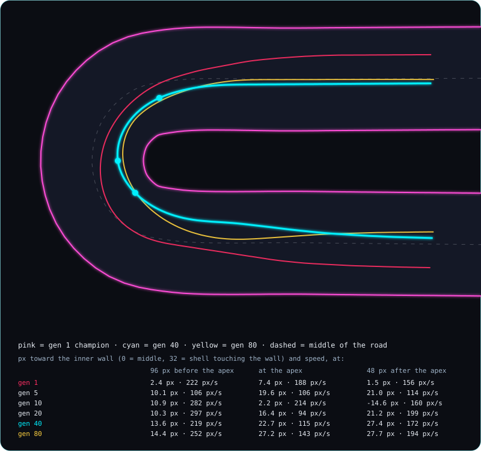
How the champions of seed 3 drive the hairpin. Pink: generation 1. Cyan: generation 40. Yellow: generation 80. The table shows how far toward the inner wall each one passes three spots, and how fast.
| champion | 96 px before the apex | at the apex | 48 px after the apex |
|---|---|---|---|
| gen 1 | 2.4 px · 222 px/s | 7.4 px · 188 px/s | 1.5 px · 156 px/s |
| gen 5 | 10.1 px · 106 px/s | 19.6 px · 106 px/s | 21.0 px · 114 px/s |
| gen 10 | 10.9 px · 282 px/s | 2.2 px · 214 px/s | −14.6 px · 160 px/s |
| gen 20 | 10.3 px · 297 px/s | 16.4 px · 94 px/s | 21.2 px · 199 px/s |
| gen 40 | 13.6 px · 219 px/s | 22.7 px · 115 px/s | 27.4 px · 172 px/s |
| gen 80 | 14.4 px · 252 px/s | 27.2 px · 143 px/s | 27.7 px · 194 px/s |
0 is the middle of the road. 32 means the shell touches the inner wall. Negative means toward the outer wall. The apex is the innermost point of the curve.
The honest version is a bit messier than "it learned to cut corners":
- Generation 1 drives down the middle.
- By generation 5 it already keeps to the inside, but it crawls round at about 106 px/s.
- Generation 10 drifts out toward the outer wall right after the apex.
- By generations 40 and 80 it hugs the inside every time. Generation 80 passes the apex only about 5 px from the wall, and faster than generation 40 (143 against 115 px/s).
- It's not a complete racing line. A racing driver swings wide before the turn and then cuts in. These cars don't swing wide; they just keep to the inside.
Reproduce it: node tools/figures.js (insideLine in docs/img/figure-data.json).
Same shape, different numbers
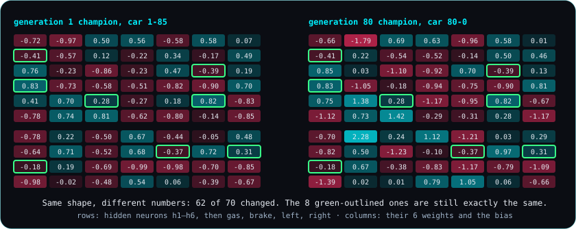
The 70 numbers of the generation 1 champion (car 1-85) and the generation 80 champion (car 80-0) of seed 3. Same shape, same 70 slots. 62 of the 70 numbers changed. The 8 outlined ones are still exactly the same.
The brain didn't grow or get new parts. It's the same 70 slots from the first random car to the champion. Only the numbers in them changed, a few at a time, over 80 generations.
Interactive later: click any car in a running generation and see its 70 numbers and its family line light up.
One unbroken family line
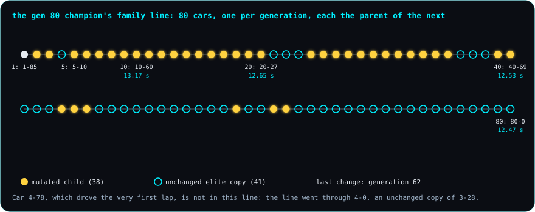
The family line of the generation 80 champion: 80 cars, one per generation, each the parent of the next, all the way back to car 1-85 in generation 1.
- 80 cars, no gaps. Every car in the line is the parent of the next one, from 1-85 (a random brain from generation 1) to 80-0.
- 41 links are unchanged elite copies. The best of a generation was simply copied into the next one.
- 38 links are mutated children. Those are the only places where numbers changed.
- The last change was in generation 62. Generations 63 to 80 are the same brain, copied unchanged 18 times, because no child beat it.
- Our hairpin car is an ancestor. The generation 40 champion from this chapter (car 40-69) is in the line.
- The first lap is not. Car 4-78, which drove the very first lap in generation 4, is not an ancestor of the final champion. The line went through car 4-0, an unchanged copy of the generation 3 best. The first car to finish a lap wasn't the one whose family won.
Reproduce it: champions/seed-3.json (the ancestors of generation 80) and runs/seed-3.json (each generation's champion).
What actually happened
- Every saved champion, run alone, drives exactly the lap time and fitness recorded during evolution. All 30 of them (5 seeds × 6 generations) were checked to the step.
- Opening the brain panels changes nothing: with them open, the evolution still matches the recorded run row for row.
- The bugs were all on screen: a title running into a menu, a champion shown under the wrong id, a label covering a panel. Each one was found in screenshots and fixed before the commit.
The prompt: entry 8: let us see the brain think.
In the code
explainThink()insrc/sim/brain.js: the whole calculation behind one decision, every number of it.strongestHidden()insrc/render/decision-panel.js: the hidden neuron with the biggest say in a key.drawBrainPanel()insrc/render/brain-panel.js: the live network (key B in the game).drawDecisionPanel()insrc/render/decision-panel.js: "explain one decision" (key F).drawWeightsGrid()insrc/render/weights-grid.js: the 70 numbers (key N).ancestors()insrc/sim/evolution.js: a champion's family line, back to generation 1.
6. Me vs the AI
The one idea: my best lap and the AI's best lap drive at the same time, side by side, and the clock decides.
Analogy: racing your own ghost in a video game. Here the ghost is my recorded lap, and the challenger is a car that taught itself.
Key figure
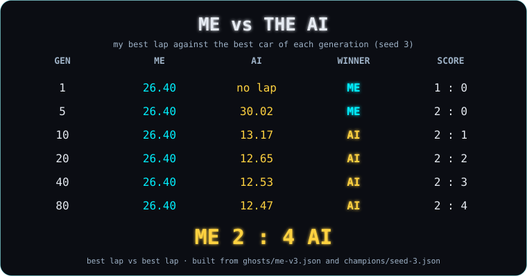
My best lap (26.40 s) against the best car (the champion) of each of the six fixed generations of seed 3. I win generations 1 and 5; the AI wins 10, 20, 40 and 80. Final score 2 : 4 to the AI. Built only from the saved files: my ghost lap and the champions file.
The rules of a race
- My car (cyan) replays my ghost: the exact keys I held on each of my 1584 steps.
- The AI's car (yellow) is driven live by the champion's brain, step by step, exactly as in chapter 3.
- They start together and don't collide: each drives in its own copy of the world.
- Best lap vs best lap. My 26.40 s lap was a flying lap: I crossed the start line already moving, at 142 px/s. So the AI also drives its best lap, from exactly where that lap really began, at the speed it really had. A champion's first lap is a standing start: from rest, 30 px behind the line. It's always a little slower. For example, the gen 40 champion's first lap is 12.78 s and its best is 12.53 s; it races with the 12.53 s.
- A champion that never finished a lap starts from the normal start spot and drives until it crashes or stalls. I win that row by default.
- During the race the screen shows the live gap. That's the answer to "when did the leading car pass the spot where the other car is now?"
Real numbers
| gen | me | AI | winner | by | score |
|---|---|---|---|---|---|
| 1 | 26.40 s | no lap (crashes at 65% of a lap) | me | by default | 1 : 0 |
| 5 | 26.40 s | 30.02 s | me | 3.62 s | 2 : 0 |
| 10 | 26.40 s | 13.17 s | AI | 13.23 s | 2 : 1 |
| 20 | 26.40 s | 12.65 s | AI | 13.75 s | 2 : 2 |
| 40 | 26.40 s | 12.53 s | AI | 13.87 s | 2 : 3 |
| 80 | 26.40 s | 12.47 s | AI | 13.93 s | 2 : 4 |
Every race was actually driven, and each one ends with exactly the lap times recorded during evolution, to the step: 1584 steps for me, and 1801, 790, 759, 752 and 748 steps for the AI. Reproduce it: node --test tests/step6.test.js, or in the game index.html?race=3-10&autoplay=1 (any seed-generation pair), and index.html?scoreboard=3&autoplay=1.
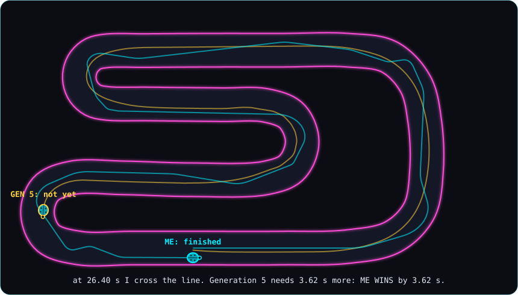
One race as a picture: generation 5 against me. At 26.40 s I cross the line. The generation 5 car is still in the last corner and needs another 3.62 s. The thin lines are both paths. Mine wobbles; the AI's is smoother.
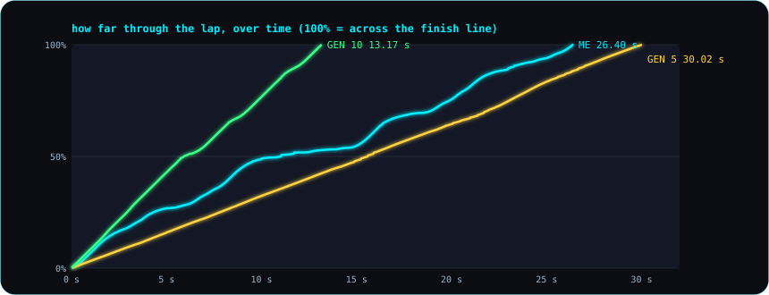
The same races as lines. Generation 10 (green) is about twice as fast as me the whole way round. Generation 5 (yellow) is slow but steady. I (cyan) am faster than generation 5 at the start, slow down around the middle of the lap, and finish 3.62 s ahead of it.
Where do I lose to generation 10? Everywhere, by about half. From the start to 40% of the lap I take 8.28 s, and it takes 4.65 s. From 40% to 65% (the top straight, the hairpin and the leg after it) I take 8.12 s against its 3.58 s, the biggest difference. The last 35% is 9.98 s against 4.92 s. Reproduce it: node tools/figures.js (raceGen5 in docs/img/figure-data.json); the split times come from the same race, gen 10 against me.
Interactive later: pick any generation and race it against your own lap, recorded right there in the page.
What actually happened
- The race code matched the recorded laps on the first run. All six races end at exactly the recorded step.
- On screen, three things needed fixing after the first screenshots:
- The live gap sat on top of the top wall. - At the finish, the "ME" and "GEN 10" tags covered each other. - The "crashed here" label hid under the generation 1 car.
- Generation 10 is the first time the AI beats me. It does it by 13.23 s, and its 13.17 s lap is half of mine.
The prompt: entry 10: the guide in two levels, then me vs the AI.
In the code
createRace()insrc/sim/race.js: my ghost and one champion, each at the start of its best lap.championBestLap()insrc/sim/race.js: drives a champion alone and keeps its fastest lap and where it began.stepRace()andrunRace()insrc/sim/race.js: one step, or a whole race, for both cars.raceGap()insrc/sim/race.js: who's ahead right now, and by how many seconds.raceResult()insrc/sim/race.js: who won and by how much, or how the AI got out.buildScoreboard()insrc/sim/scoreboard.js: the six rows and the running score, from the saved files only.drawRaceHud()anddrawScoreboard()insrc/render/race-view.js: the race screen and the scoreboard.
Glossary
- Activation function: another name for a squash function. See squash.
- Apex: the innermost point of a curve.
- Best lap: a car's fastest lap. In races, both sides drive their best lap.
- Bias: one extra number a neuron adds after summing up. It shifts the neuron's result up or down, whatever the inputs are.
- Brain: here, a neural network of 70 numbers that turns 6 inputs into 4 key presses.
- Champion: the car with the highest fitness in its generation.
- Checkpoint: an invisible line across the road. There are 82, and a lap only counts if the car crosses them all, in order.
- Child: a car of the next generation, made from a copy of one parent's numbers with small changes.
- Crossover: mixing the numbers of two parents into one child. We don't use it.
- Elitism: copying the single best brain into the next generation unchanged, so the best can never get worse.
- Evolution: keep the best, copy them with small changes, repeat.
- Fitness: the score that decides who becomes a parent. Here: how far along the track, plus a bonus for a fast lap.
- Flying lap: a lap that starts with the car already moving across the line, like my 26.40 s lap.
- Fixed timestep: the simulation always moves forward in steps of the same length (one sixtieth of a second), whatever the screen does.
- Function: a small, named piece of code that does one job.
- Generation: one round of 100 cars driving at the same time.
- Ghost: a recorded lap: the starting position plus the keys held on every step. Replaying it drives exactly the same lap.
- Hidden neuron: a neuron between the inputs and the outputs. It's "hidden" because you never see it from outside.
- Hitbox: the shape the program uses to decide whether the car touched a wall.
- Input: one of the 6 numbers the brain gets: 5 eyes and the speed, each between 0 and 1.
- Layer: a group of neurons that all look at the same inputs.
- Local optimum: a dead end that looks like the top. Every small change makes things worse, even though something much better exists.
- Mutation: a small random change to some of a child's numbers. Here, each number has a 10% chance.
- Neural network: many neurons connected in layers. Ours has 6 inputs, 6 hidden neurons and 4 outputs.
- Neuron: multiplies each input by its weight, adds them up, adds the bias, and squashes the result.
- Normalize: turn a number into a common range, here 0 to 1, so that every input gets a fair say.
- Output: one of the 4 numbers the brain produces, one per key. Above 0.5 means that key is pressed.
- Parent: one of the top 10 cars of a generation, whose numbers are copied into the next one.
- Population: all the cars of one generation, here 100.
- px (pixel): one dot on the screen. The screen is 1280 × 720 px.
- Race: my ghost lap and a champion's best lap, driven at the same time on the same track. They can't collide.
- Ray: one of the car's 5 eyes: a line that goes out until it hits a wall, up to 200 px.
- Seed: the starting number for the random number generator. The same seed always gives the same "random" numbers.
- Scoreboard: my best lap against the champion of each of the six fixed generations (1, 5, 10, 20, 40, 80), and the running score.
- Selection: ranking the cars by fitness and keeping the best as parents.
- Sigmoid: a squash function whose result is always between 0 and 1. Used for the 4 keys.
- Simulation: a pretend world inside the computer that follows fixed rules.
- Squash: turn any number into one in a fixed range, so nothing runs off to infinity.
- Stall: a car that goes 3 seconds without reaching a new checkpoint is out.
- Standing start: a lap that starts from rest, 30 px behind the line. A champion's first lap is one.
- Step: one tick of the simulation, one sixtieth of a second.
- tanh: a squash function whose result is always between −1 and 1. Used for the hidden neurons.
- Weight: the number a neuron multiplies one input by. A big weight means "this input matters a lot". A negative weight means "this input pushes the other way".